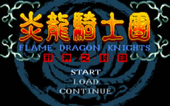

炎龙骑士团中的历法主要分成两种。在旧纪元中是以已经湮灭的古代帝国的帝国历为主，一直使用到「古代人战争」为止。而之后新建立的罗特帝亚王国则改用新的王国历法。亚斯人则有自己使用的「神历」，不过他们尚未对外透露神历的来由与纪元方式。
即使经过索尔王与精灵族智者的多年努力，对湮灭已久的过去历史的发掘成果仍然非常有限。由于还很不完整之故，罗特帝亚王国与精灵评议会对得自于许多断章残简的史料实行严格的保密管制措施，目前得以公开的就是从古代人战争开始到重返伊恩・夏拉的这段期间为止。或许在将来，对「天命之书」的重建有一定成果之后，罗特帝亚和精灵联盟会愿意像国民们公开这段至今仍是个谜的历史吧。
[流逝的纪元]（帝国历402年～1007年）
<远古~帝国历402年>
这部分的历史尚在调查与编纂之中。
<帝国历288年/王国历元年>
根据古代人战争留下的残余纪录，勉强可以追溯到迁移到这个世界的古代人在此时重新建立国家。沿袭这个新建立的王国所留下的传统，后来雷特王所建立的罗特帝亚王国认定这一年为「王国历」元年，原来的历法则称之为「帝国历」，在之后两种历法同时并用。
<帝国历402年/王国历115年>
经过一百多年的繁荣之后，力量达到顶点的古代人王国在光暗诸神双方的挑动之下，爆发了传说中的「古代人战争」。这是一场惨烈的大战，据说是代表光与暗的诸神领头开始了这场战争，为了终止对于某种被光之诸神视为禁忌的神秘魔法物质的滥用，在精灵族与龙人的参战下，过度依赖技术与邪恶物质的黑暗军终于落败。黑暗军的总帅在最后以法术摧毁邪恶的物质，由其中释放的巨大魔力将所有黑暗的技术和古代人都一起付之一炬。
在这次大战之后，古代人几乎失去了所有的魔法知识，但他们决心抛弃过去的错误重新开始建立国家。而诸神为了不让被黑暗物质爆炸造成的歪曲之力污染整个世界，以强大的结界将世界分成两边，亦即马拉与夏拉大陆。在暗黑的诸神承认失败之后，诸神决定暂时不再介入人间的事务，以监视的方式等待时间治愈多年来魔晶石所造成的一切创伤。
<帝国历720年/王国历433年>
在古代人战争结束之后的三百多年之间，将自己的祖先称之为「古代人」的遗民们从空白中重拾自己的将来。留在本岛马拉大陆上的遗民后来建立了亚克斯王国，位在达拉尼亚岛上上的一支则建立了罗特帝亚王国。在三百多年之间，这两个国家彼此并不往来，只偶尔与精灵王国和龙人族有所接触。在忘却了魔法文明之后，这两个国家都继承了先祖的血脉，以精湛的冶金、武器与铠甲工艺建立了强盛的骑士国家。
然而黑暗物质的威胁并未完全消逝。在无数碎片所造成的歪曲之力下诞生的许多邪恶妖魔逐渐出现在世界各地，其中一颗最为完整的结晶，甚至吸收了昔日古代人战争时遗下的许多憎恨与遗憾之念，成为具有黑暗物质与形体的邪神。它在长久的遂月中缓缓蓄积力量，等待着重新为世界带来黑暗的一刻来临。
<帝国历999年/王国历712年>
经过两百多年的和平岁月之后，大量的怪物忽然涌现并肆虐罗特帝亚的北方领地。经过长达二十多年的骚乱之后，为了维护达拉尼亚岛的安定，新继位的罗特帝亚王「亚美达二世」在大将军哈奇的怂恿下，决心亲自率领大军，出兵讨伐出没于达拉尼亚北陆的妖魔军团。大战前夕，罗特帝亚军集结于北陆要塞，盛大的军容令妖魔们畏却，但没想到大将军哈奇・安德托临阵叛变，在深夜里开启了驻军要塞的大门，暗中引导妖魔军团入侵，罗特帝亚军团一夕之间覆没，国王亚美达二世力战而死。
哈奇率领残余的部众潜返王都，凭借着手上的兵权，处死王后及朝廷中的众臣，并挟持亚美达二世尚在襁褓中的幼子雷伊，此后便以摄政王自居，他封闭了通往达拉尼亚北陆的道路，放弃了禁忌之森以北的广大领地，任由妖魔横行。
罗特帝亚王权旁落的这一天宣告了和平岁月的结束，流逝的年代就此告结。
 ＜[邪神的复活]-『炎龙骑士团I』＞的时代（帝国历1020年～1043年）
<帝国历1043年/王国历756年>
由于孪生血统的影响，昔日封存大邪神「亚札瑞司」灵魂的印记一分为二，同时在雷伊・杜利亚与雷特・杜利亚两兄弟的身上出现。沦为哈奇・安德托傀儡的雷伊・杜利亚，在以人质的身份出使魔族的这段期间，植于灵魂深处的印记遭到魔族所解除，那一股压制大邪神「亚札瑞司」的力量，也因此而失去了泰半的力量，从此大邪神半身的力量终于解放，沉睡已久的意识挣脱了「灵魂的羁绊」而真正的觉醒。
此时的大邪神，因为只恢复了一半的力量，无法完全挣脱「灵魂的羁绊」，因而失去大部份的理性与意识，只剩下憎恶与冲动的存在，也缺乏可以承受这种强大力量的肉体。为了取回大邪神完整的力量，妖魔们开始积极的寻找其余「邪神封印」的下落。
位于大陆上的三武圣，终于自天地间灵力的骚动，察觉到事态有变，决心再度返回马拉大陆。另一方面，同样拥有罗特帝亚皇室血统的雷特，在成年礼当日得知长久以来一直被克隆所隐瞒的身世，遂从此踏上了复国的旅程。在智者圣・索尼克的引导下，雷特再度与三武圣相逄，并在旅途中集结了一群可靠的伙伴，拯救出遭魔族所控制的兄长雷伊，并寻回在王室生变时所失落的炎龙剑与黑龙剑，冒险深入妖魔疆域，挑战大邪神的幻影，并成功将�k击败。然而已经破损的封印无法回复，最后，三武圣各自以半身的力量为代价，将构成大邪神的黑暗物质结晶转化为一个完整的新生命。这个继承了古代人久远记忆与灵魂的孩子，注定将会重启被关上已久的宿命之门。
而在大邪神封印之后，雷特即位为罗特帝亚王，自从古代人战争以来的长久沉默终于结束，一个新的时代就此展开。
＜[黄金城传奇]-『炎龙骑士团II』＞的时代（帝国历1044年~1062年）
<帝国历1062年/王国历775年>
雷特即位为罗特帝亚王之后，迎娶了从小一同长大的克隆独生女「米兰」为后，并收养了封印大邪神之时诞生的奇异婴孩，将他取名为「索尔」，翌年，皇后米兰又产下一子，取名为「迪恩」，光阴荏苒，两位小皇子在平和的岁月里成长茁壮，转眼间来到了决定皇室继承人的日子。
知道自己并非雷特王己出，以为自己只是一个平凡孤儿，受到幸运之神的眷顾才得以进入王室的索尔，对于王位继承一事始终兴致缺缺，然而天赋的睿知、平易近人的特质与豪放洒脱的个性，为索尔赢得了举国人民与一班大臣的爱戴，而心中没有私心的雷特，也决定让索尔成为继任下一任罗特帝亚国王的皇太子。
在得知即将继承王位的当天，索尔邂逅了一名失去记忆的神秘少女「悠妮」，由于她身上身上高贵的装束，使索尔认为悠妮是来自大海彼岸的盟邦亚克斯王国的公主。面对难得的机会，索尔便以护送悠妮返国，顺道增广见识为由，企图暂时逃避王位继承的问题，而在得到雷特王的首肯后，在王家侍卫的亚雷斯的陪同下，一行人启程前往马拉大陆本土的亚克斯王国，不料却因此卷进一场巨大的风波里。
在古代人刚来到这个世界之初所建造的的巨大飞行要塞中，在「古代人战争」之后还留下最后一座浮游在天际，这座被后来的遗民们称之为「黄金城」的传说之城再度出现天际。古代人的遗产引起了魔族的觊觎，并设下一连串的阴谋与诡计，企图夺取传说中太古文明的遗物，终极兵器「审判之日」，重新获得支配马拉大陆的巨大力量。
索尔一行人历经重重的险阻，在贤者约拿・西斯多罗塞与高精灵族长老希尔法・埃伦的引导下，一步一步突破魔族所设下的陷阱，终于进入了传说中的黄金城，没想到在这里等待着索尔的，却是一个注定以悲伤收尾的结局。
在黄金城深处主宰一切的，在幕后引发马拉大陆上无数风波的主使者，并非原先所猜测的魔族遗孽，却是在过去由古代人所创造的人工生命体。这些人工生命体数千年来始终忠心的执行当初古代人所余留下来的使命，历经长时间的修复之后，人工生命体不但完成了昔日圣眷遗族所留下来的终极兵器「审判之日」，甚至还成功将当时未能准备完成的「黑暗之焰」建造完成。
当索尔一行人最后进入黄金城之际，当时在人工生命体当中，负责支配与统筹的核心，正要开始执行古代人在封印之战末期面对魔族大军的包围时，在所有希望都己熄灭之际所下达的的最后一道使命：「启动『黑暗之焰』将马拉大陆彻底毁灭。」而失忆的神秘少女悠妮，竟然就是人工生命体中握有启动终极兵器的钥匙。
据说在索尔的努力之下，悠妮的自主意识终于战胜了许久以前被授与的命令，但她为了让黄金城这莫大威胁永远从世界上消失，她割舍了与索尔的深厚感情，以最后的力量将索尔一行人送返马拉大陆后，从此与黄金城一起消失无踪。
历经无数惊险的战役，体验失去挚爱伤痛的索尔，在返回达拉尼亚后，终于无奈的接受了自己的宿命，继承了罗特帝亚的王位。数年后，索尔王迎娶了昔日同为一起冒险的伙伴，始终对索尔一往情深的亚克斯王国公主希莉亚为后。自此统一达拉尼亚与马拉大陆的索尔王并不知道，属于他的使命才刚刚要开始而已…
＜风之纹章『炎龙骑士团外章』＞（王国历1081年～1082年）
<帝国历1081年/王国历794年>
在坚守正道的雷特与索尔王治世的和平时代，审慎的诸神逐渐除却对人类再次堕落的疑虑，开始派遣�k们的侍女来对人间传达种种意旨。这些身穿闪耀铠甲的美丽天界使者，被人们通称为「女武神」。据说从雷特王的时代开始，以卡尔汀的女武神「凯伦诺特」为首，「艾芙劳拉」、「丝卡蒂亚」与「玛茜」等四名女武神最常来往于人间。
女武神并不像她们的主人九柱神那样是不可被伤害的，在黄金城传奇发生之前，女武神之一的玛茜在一次旅程中误中恶魔所设下的陷阱，失去意识的她坠落在马拉大陆边境的一个小村落外，受到当民青年巴特的救助，两人经过一番相处之后，向来对人类抱持好感的女武神玛茜与朴实的巴特之间，孕育出一段不被许可的人与神的恋情。最后被爱情虏获的女武神玛茜，决心放天界使者身份选择成为平凡的人类，而与巴特共度一生。
玛茜的决定引起了魔族的注意，玛茜刚产下幼子不久后，受到恶魔驱使的村民趁巴特外出之际，以魔女的罪名对玛茜处以火刑，虽然玛茜临刑之前曾经对其余的姊妹们求援，但在她们抵达刑场时，失去神力的玛茜已经被强力的咒术送往位于异界的根据地。
当巴特返回家中时，迎接他的只剩下在女武神的愤怒下被夷为平地的村子，以及躺在荒地里那个刚出生不久的，被取名为兰迪斯的孩子。
在古代人战争后诸神保持沉默的时代，在大陆上罗特帝亚势力所不可级的其它部分，新一代的人们为了寻找宗教上的信仰与依归，建立了各式各样的制度，长老院、评议会、仲裁委员会议．．．等，为了能公正的决断事务，甚至有神职人员企图制造新的神祗。虽然到最后这些聪明的造神者摆脱不了决裂的命运，但当初企图创造神祗时所构想的方法，却仍然完整的保存在相关的文献里面。造神者们认为坚强的信仰就可以让神成为真实，这种狂妄的信念在将来遭到了魔族的恶用。
巴特与玛茜的结合受到女武神破却誓言的惩罚，因此他只能再活廿年，所以当兰迪斯满廿岁的时候他就开了人世。巴特的遗言就是要兰迪斯到广大的世界上证明并彰显诸神的荣耀。但是无心离开故乡的兰迪斯在巴特死去之后却依然隐居在乡间，过着平淡的生活。
在魔都中，恶魔们以玛茜身为女武神所具备的魂力为动力的主要来源，并依照当年的文献记载，再度造出昔日用来代替诸神的人造神祗「平衡神」，散布于马拉大陆上的魔族也开始暗中展开活动，以马拉大陆西南边陲为起点，开始散布以「葛斯洛喀」为名的伪神教义，并以邪术暗中施行神迹，再度以一个新兴宗教的形象出现在世人面前。
在命运的牵引下，兰迪斯意外卷进了一场由葛斯洛喀教派策动，以罗特帝亚王室为目标的阴谋，并因此而与罗特帝亚王索尔有一面之缘，之后兰迪斯更进一步查出伪教的目的，竟然是藉由散布于马拉大陆各地的巨塔为媒介，集中教徒虔诚的信仰所产生的巨大精神力，将位于异界里的平衡神召返至现世。
一如魔族所预料，平衡神在信徒强烈的召唤下突破了异界的障壁，即将现临人世。种种因缘际会将兰迪斯推上了世界的舞台，这位身上带有神之血统的游侠，在最后关头阻止了平衡神的降临，沈眠于平衡神体内的玛茜，在感应到兰迪斯的存在时终于挣脱了禁制而觉醒，并将平衡神再次带回异界的缝隙里。
虽然完成了让后世歌颂的丰功伟业，兰迪斯却不留恋索尔王所承诺的奖赏与权势，他像风一般再次消逝在辽阔的原野之中。
[探索的年代]（帝国历1083～1085年）
<帝国历1083年/王国历796年>
在经过长久的观察之后，光之诸神相信在罗特帝亚领导之下的人间世界已经能够靠自己的力量决定未来，因而允许将世界分隔为二的巨大封界消除，让乌纳・夏拉大陆重新合为一体。但是暗之诸神们也意识到在这个世界已经没有胜过光明侧的机会，图谋重新开启沈寂已久的艾恩・夏拉世界之门，在新的世界重启争夺霸权的战争。他们故意在战争的最后将得自精灵族叛徒塔拉斯克的「世界之钥」遗落给精灵法师希尔法。
在索尔王即位的十年之后，罗特帝亚王国迎接了富饶的全盛时期。罗特帝亚精锐的军队与骑士团捍卫着各地的安全与秩序，而在索尔王审慎的命令之下，罗特帝亚的学者与法师们也开始调查各种古代人的遗物、遗迹与湮灭的文件，试图找回古代人战争的缘由、过去发生的一切，以及罗特帝亚人-或是伊铎尔的遗民-真正的根源。身为历代远古英雄的武器炎龙剑的继承者，索尔王始终感觉到自己将完成他们在冥冥中所托付的使命。
在睿智又充满好奇心的精灵大法师希尔法的主导之下，这段探索持续了十多年的时间，众多智者与学者在马拉大陆上搜集各种蛛丝马迹、推敲各种可能与理论，逐渐找回昔日伊铎尔王国的旧所之后，希尔法终于找到了另一半的「世界之钥」，以及当时的伊铎尔遗民所留下的残破的纪录。索尔王为此陷入了长时间的思考之中，他不知道是否应该重新开启被封闭的「世界之门」，回到旧日的世界去查明那禁忌的真相。
终于，在帝国历1085年的某个早晨，索尔王在皇宫向众人宣布调查的结果与重启世界之门的决心。他获得了所有臣民的一致追随，除了皇弟迪恩奉命留下来代理罗特帝亚的政务之外，在精灵族与龙人全员的陪同下，索尔王率领亲卫骑士团与重臣们，以及坚持要跟着去的王妃希莉亚与洁西亚公主，正式踏上了回返的旅途…
[回返的年代]（王国历1086年～1101年）
<帝国历1086年/王国历799年>
帝国历1086年，大法师希尔法重新开启世界之门。在他的报告之下，索尔率领王国军前往艾恩・夏拉大陆。
时隔将近千年的岁月，再次开启的「世界之门」重新把艾恩・夏拉与乌纳・马拉连在一起。然而昔日的恐怖灾难已经永远改变了昔日世界的一切，而昔日的大破坏所留下的强大力量影响了「世界之门」作用，使它失去了通往乌纳・马拉的机能。换言之，来到艾恩・夏拉的索尔王一行将暂时无法回到位在乌纳・马拉的马拉大陆去。
不过这些不安很快就随着远古回忆的复苏而烟消云散。精灵族和龙人族回到了昔日的故都米萨拉斯和冈・拉格城，他们发现一切都和千年前没什么两样。由于无法渡过被封印之塔所封闭的锁炼山脉，索尔王决定让罗特帝亚军在最东北的海岸边建立临时的据点，这个暂时建立的城镇在后来的十年间不断后来扩张，后来就成为壮丽的诺拉・谬恩城。
除此之外，不可不提的就是亚斯人的出现。这个不论在外貌或文化上皆异于罗特帝亚或精灵族的种族似乎在这段空白的期间建立了结构严谨的国家，他们谨慎的处理与罗特帝亚及精灵族的接触并表现友善与协力之意，但他们对于开放本国交流的保守态度与作法却令人感到怀疑。
十四年的时间很快的过去了，诺拉・谬恩已经成为壮丽的首都，坚若盘石的肯法城堡也终于宣告完成。寻求新天地与冒险的冒险者们不断从乌纳・马拉前来，为这个一度破灭的世界注入更多活力。回返的年代终于告一段落的此刻，不但宣告了一个新时代的来临，也为「诸神的契印」揭开了序幕…… |